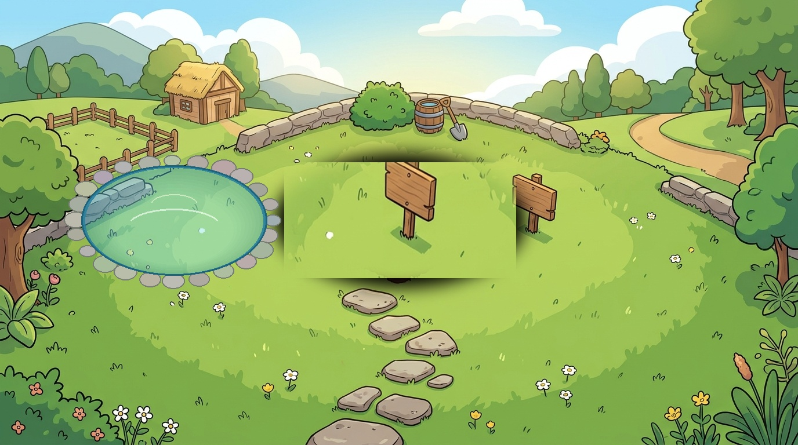
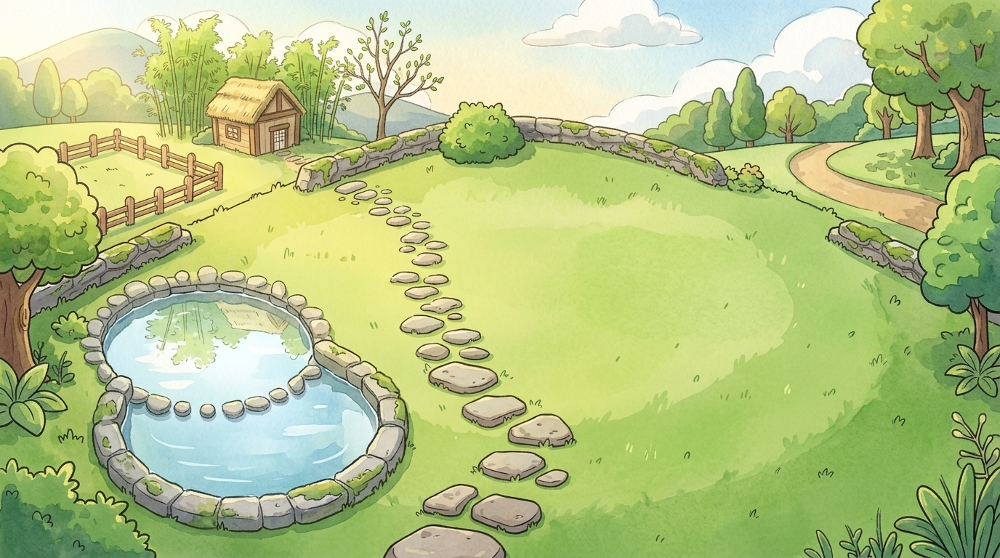
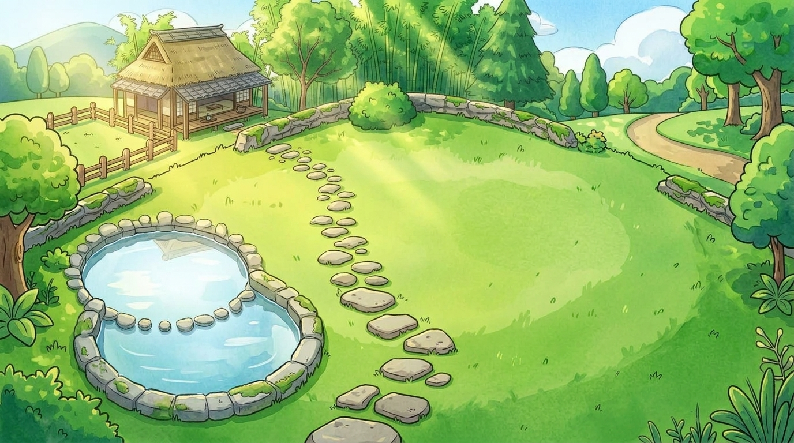
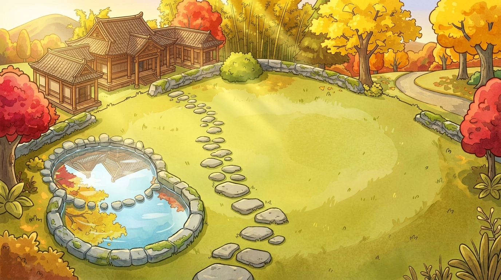

🌱 第一階段 · 春生初萌
2026/09/29 ～ 2026/11/16（累積 1 ～ 49 天）
特點說明：初發心起步階段，收集蓮花少，因此採用小石圈水池；左上方為初心小草舍，草坪初綠，老和尚木牌法語指引同修。
🌿 第二階段 · 庭園初展（新生成）
2026/11/17 ～ 2027/01/16（累積 50 ～ 110 天）
特點說明：
1. 池塘大幅擴大：改為寬廣雙室大石池，水域延伸寬闊，容納多朵蓮花絕不擁擠。
2. 池內無預繪蓮花：水面平靜澄澈如鏡，完全留給學員打卡長出真實聖蓮。
3. 草地中央無雜花：中央廣闊草坪純淨留白，打卡誦經長出的太陽花一目了然、絕不被蓋住。
2. 池內無預繪蓮花：水面平靜澄澈如鏡，完全留給學員打卡長出真實聖蓮。
3. 草地中央無雜花：中央廣闊草坪純淨留白，打卡誦經長出的太陽花一目了然、絕不被蓋住。
🎋 第三階段 · 菩提成林（新生成）
2027/01/17 ～ 2027/03/30（累積 111 ～ 183 天）
特點說明：
1. 位置視角 100% 吻合：相同位置的雙室大石池、相同草坪與石徑。
2. 池面純淨空靈：水池澄澈見底，無任何預繪蓮花，動態蓮花可自然漂浮盛開。
3. 盛夏林木與禪舍成長：後方竹林繁茂成林，草舍擴展為帶有緣側茶座的寬廣避暑禪舍。
2. 池面純淨空靈：水池澄澈見底，無任何預繪蓮花，動態蓮花可自然漂浮盛開。
3. 盛夏林木與禪舍成長：後方竹林繁茂成林，草舍擴展為帶有緣側茶座的寬廣避暑禪舍。
🍁 第四階段 · 金秋豐收（新生成）
2027/03/31 ～ 2027/06/23（累積 184 ～ 268 天）
特點說明：
1. 金秋大禪堂：草舍成長為莊嚴宏偉的木構大禪堂，滿山金黃銀杏與丹楓相映成趣。
2. 雙室大水池澄澈倒映：水池水面如鏡，倒映金黃樹影與禪堂飛簷，無預繪蓮花干擾。
3. 草坪開闊：中間草皮純淨開闊，金黃陽光灑落，學員打卡的數十朵太陽花可在此壯麗盛放。
2. 雙室大水池澄澈倒映：水池水面如鏡，倒映金黃樹影與禪堂飛簷，無預繪蓮花干擾。
3. 草坪開闊：中間草皮純淨開闊，金黃陽光灑落，學員打卡的數十朵太陽花可在此壯麗盛放。
🌟 第五階段 · 夜睹明星（新生成）
2027/06/24 ～ 2027/09/28+（累積 269 ～ 365+ 天）
特點說明：
1. 夜睹明星主題：正上方高懸璀璨光芒的「自性明星」，大水池中澄澈倒映星芒。
2. 大水池與草地完全留白：深邃如鏡的水面無預繪蓮花，草地無雜花，一整年修持成果（滿池聖蓮與滿園太陽花）在此圓滿輝映！
3. 莊嚴大禪堂夜燈：禪堂窗櫺透出溫暖安定的明黃燈光，靜坐調心，明心見性。
2. 大水池與草地完全留白：深邃如鏡的水面無預繪蓮花，草地無雜花，一整年修持成果（滿池聖蓮與滿園太陽花）在此圓滿輝映！
3. 莊嚴大禪堂夜燈：禪堂窗櫺透出溫暖安定的明黃燈光，靜坐調心，明心見性。